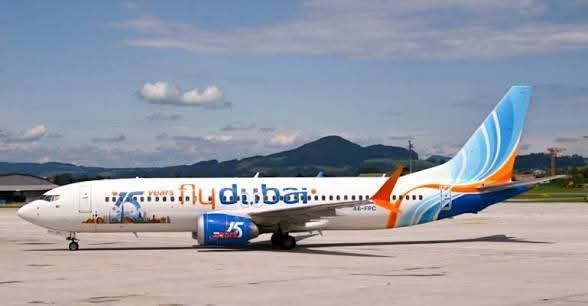
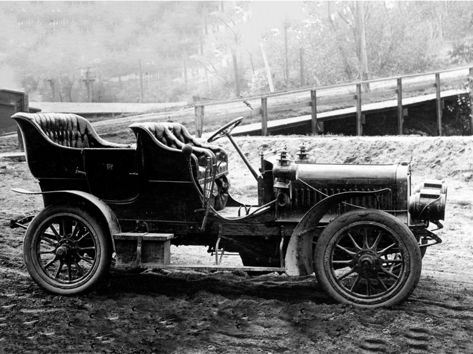
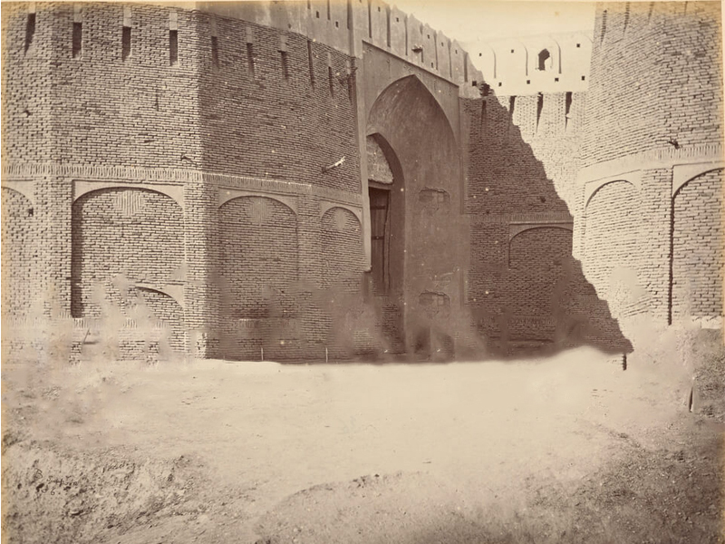
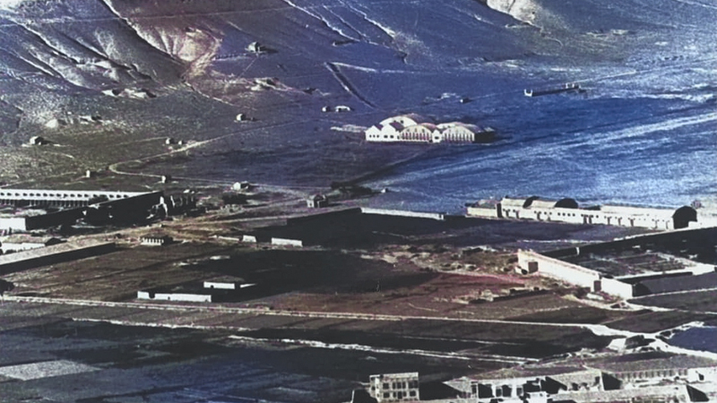

هلمند ولایت کې د تیرپارک جوړولو چارې ۲۵ سلنه پر مخ تللې دي
د ټرانسپورټ او هوایي چلند وزارت د هوا پېژندنې ریاست خبرداری: د باران او بادونو د پېښېدو اټڪل!
د واټ ټرانسپورټ ولایتي مسئولینو سره د چارو لا شفافیت په اړه انلاین ناسته وشوه
د واټ ټرانسپورټ ولایتي مسئولینو سره د چارو لا شفافیت په اړه انلاین ناسته وشوه
د واټ ټرانسپورټ ولایتي مسئولینو سره د چارو لا شفافیت په اړه انلاین ناسته وشوه
د واټ ټرانسپورټ ولایتي مسئولینو سره د چارو لا شفافیت په اړه انلاین ناسته وشوه
د واټ ټرانسپورټ ولایتي مسئولینو سره د چارو لا شفافیت په اړه انلاین ناسته وشوه
د افغانستان په لرغوني تاریخ کې کله چې سړکونه او موټر نه وو، د مالونو لېږد رالېږد د حیواناتو په مرسته ترسره کېده. ویل کېږي چې د ۱۱۵۲ لمریز کال په شاوخوا کې د تیمورشاه د واکمنۍ پر مهال، د قافلو د تنظیم لپاره یو کس چې "قافله باشي" يې باله، ټاکل شوی و. دا په افغانستان کې د ځمکنيو ټرانسپورټي چارو د تنظیم لومړنۍ هڅه وه. د ۱۲۸۳ لمریز کال په اوږدو کې د امیر حبیبالله خان د واکمنۍ پر مهال د هند د نایبالسلطنه له خوا د ډالۍ په توګه لومړنی موټر د غوايانو په مرسته افغانستان ته راوړل شو. دا لومړنی موټر و، چې د هېواد د ټرانسپورټي نظام د پرمختګ بنسټ یې کېښود. ، د عبدالحی حبيبي (د افغانستان تاريخي پېښليک کتاب) لومړي ټوک له قوله په ۱۲۹۲ لمریز کال د لیندۍ په میاشت کې "شرکت موټرکار افغانيه" په نوم لومړنی ټرانسپورټي شرکت جوړ شو، چې د موټرو د پراختیا لپاره یې لاره هواره کړه.

له انګلستان څخه د خپلواکۍ له اخيستلو وروسته چې د افغانستان په بېلابېلو برخو کې پرمختګونه پيل شول، د ځمکني ټرانسپورټ او هوایي چلند لپاره هم يو مهم پيل و او په ۱۳۰۴ل کال امانالله خان په خپل لګښت د «موتور رانی» په نوم يو ټرانسپورټي شرکت رامنځته او له دې سره يې سړک جوړولو ته هم پاملرنه زياته کړه. په (۱۹۵۰ ـ ۱۹۶۰) زېږديزو کالونو پورې د هيواد لوېې لارې جوړې او پخې کړای شوې چې آن تر تورغونډۍ او اسلام کلا پورې وغځول شوې، چې د ټرانسپورټي نظام د لا پیاوړتیا سبب وګرځېدې. په ۱۳۱۱ لمریز کال د مخابراتو ریاست په چوکاټ کې د عمومي ټرانسپورټ مدیریت جوړ شو. وروسته دا مدیریت د مخابراتو له چوکاټ څخه بېل او د صدارت عظمی تر چتر لاندې یې فعالیت پیل کړ، چې د ترافیکو څانګه هم د دې مدیریت برخه وه. په ۱۳۳۵ لمریز کال دا مدیریت د ټرانسپورټ ریاست ته ارتقا وکړه او د سوداګرۍ وزارت په چوکاټ کې یې کار پیل کړ. په ۱۳۵۸ لمریز کال کې دا ریاست د ټرانسپورټ وزارت ته واوښت او د یوه خپلواک وزارت په توګه یې خپل فعالیت پيل کړ.

د افغانستان د هوايي چلند بنسټ په ۱۳۰۲ لمریز کال کې کېښودل شو او په ۱۳۰۶ لمریز کال د لیندۍ په میاشت کې د کابل او تاشکند ترمنځ لومړنۍ هوايي کرښه د ډیپلوماتیکو اړیکو د پیاوړتیا لپاره پرانېستل شوه او تر دې وروسته هم د روس او جرمني کوچنۍ الوتکې د ملخانو د دواپاشۍ او ځينې نورو ډيپلوماټيکو مسائلو لپاره افغانستان ته راتلې، د همدې الوتکو د کنټرول او د هوايي چلند اړتياوو ته په پام په ۱۳۳۱ لمریز کال کې د ملکي هوايي چلند عمومي مدیریت رامنځته او د الوتنو د کنټرول، د ملکي هوايي ډګرونو د سمون مسوولیت یې پر غاړه واخیست. د دې مدیریت لومړنی مشر ګلبهار خان و، نوموړی د هوايي ځواک له قوماندانۍ يو تقاعد شوی پيلوټ و او په دې برخه کې يې پوره تجربه درلوده، د هوايي چلند مدیریت د لومړني عمومي مدير په توګه وټاکل شو.

د ایکاو او د ملګرو ملتونو پراختیایي ادارې (UNDP)په مرسته په ۱۳۴۷ل کال کې یو بل هوایي شرکت د "باختر افغان الوتنه" په نوم د کورنیو الوتنو لپاره تاسیس شو. د دې شرکت موخه د لرې پرتو او سختو سیمو د خلکو ستونزو ته لاسرسی او د ګرځندويانو جلبول وو. درې کاناډایي (Twin Otter)الوتکې، چې ۱۸ چوکۍ يې درلودې، په خامه او ۳۰۰ متره ځغاستليکو باندې يې ناسته او الوتنه کولای شوه، وپېرل شوې. د ۱۳۵۷ لمریز کال د غويي د اوومې نېټې له کودتا وروسته، د هوايي چلند په چارو کې د پام وړ بدلونونه رامنځته شول. نورمحمد دلیلي د ملکي هوايي چلند رئیس وټاکل شو او په ۱۳۵۸ لمریز کال د هوايي چلند ریاست د ټرانسپورټ وزارت تر چتر لاندې راغی. ښاغلی بارق شفیعي د ټرانسپورټ او هوايي چلند وزیر وټاکل شو او وروسته تر ۱۳۶۴ لمریز کال پورې شیرجان مزدوریار او عبدالرحیم کاروال د ټرانسپورټ وزیرانو په توګه دندې ترسره کړې.